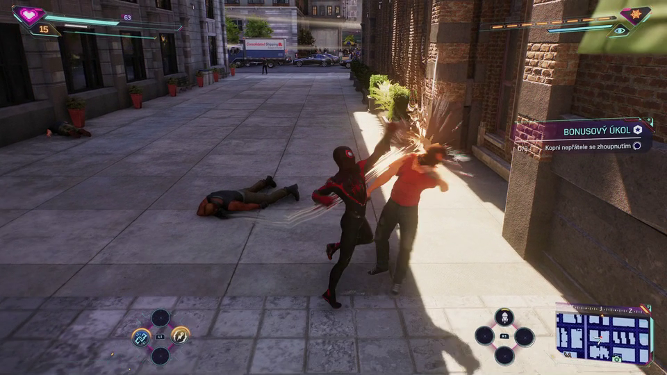

One button if it is missing.
FrameLab checks English OCR automatically. Install English OCR downloads the Windows component from Microsoft after administrator approval. Your Windows language stays unchanged; recognition then works offline.
Feed a capture card into your PC. Let your NVIDIA GPU create the frames in between. Play through FrameLab on your monitor.
Get the ready-to-run appFree · portable Windows x64 · English / Czech
A console, a capture card, and an RTX sitting in a PC. Started with one thought: could that GPU make 30 FPS console games feel smoother?
Real captures. Original frames next to generated ones. Slow it down and look at the edges, the HUD, and the places it breaks.
These are different gameplay takes, resolutions and settings—not a controlled multiplier ranking. Counts describe captured/submitted images, not camera-measured monitor FPS. Source-aligned videos remove processing delay; measured-timing versions are in each ZIP. Latency excludes the capture card, game rendering and display.
One kick, two real inputs, two generated positions. The character moves forward, but translucent limbs remain behind. Motion blur and impact particles already exist in the originals; the added silhouettes are the interpolation failure.
Open native-pixel crops ↗Move the divider across the same frame. Inspect material detail, moving characters and the HUD. A visible change can help or hurt the image.

ORIGINALENHANCEDThese are paired offline exports from the local RTX 4050 experiment. Frame generation was off. Inference: CS:GO 1280×720; Spider-Man 960×536. 0% keeps the original, 100% shows the full neural change. This is not a live FPS benchmark or a guarantee of better quality.
Preview.13 includes the NR adapter; external model files are separate. NR runtime redistribution rights have not been established. The guide links the community source and import steps.
Choose your source, resolution and input rate independently. Keep an eye on changing input, generated output, queue delay and GPU load while you play.
Preview.9 interface with replayed RAW gameplay. These preview counters are not a live performance benchmark. Switch between English and Czech in the app.
Read English dialogue already visible in the image, translate on this PC and place Czech independently. No microphone or cloud translation.
FrameLab checks English OCR automatically. Install English OCR downloads the Windows component from Microsoft after administrator approval. Your Windows language stays unchanged; recognition then works offline.
CPU translation is included. Optional CUNI Q3 (3.52 GB) and Q8 (7.70 GB) use a resumable, verified download. The first GPU model also downloads its 1.62 GB portable runtime. No account or Ollama installation.
Move Czech text and its background without moving the reading area. Multiline text stays inside the visible viewport, including cropped images and fullscreen. Long text shrinks to fit.
OCR can miss tiny or short-lived text; translation can be wrong and adds delay. Free VRAM is checked with current effects running. More weight precision is not a guarantee of better Czech.
English setup →Český návod →Q3 vs Q8 · 300 sentences / vět →
Full preview.13 includes NVIDIA VFG, both gameplay demos, CPU subtitles, export tools and the NR adapter. Unzip and launch in English; Czech is one click away. Optional CUNI GPU models download inside the app.
Download complete FrameLabWindows x64 · preview.13 · fullWindows 10/11 x64, working NVIDIA GPU/capture drivers; English OCR for subtitles. Begin with 1080p, Medium and 2×. Unsigned experimental application.
Preview.13: CUNI model downloads, one-click Windows OCR setup, draggable Czech captions and visible-viewport bounds.
Complete installation guide (CZ / EN) ↗
External community ZIP: an additional 731 MB. NR DLLs are not bundled; linking/import does not grant a license.
Checksums & file integrity ↗A console is just one source. FrameLab accepts a compatible DirectShow capture device, then processes its delivered frames on your NVIDIA GPU.
Keep all folders together in a writable location. No installer or administrator setup is needed for FrameLab.
Open 1 - Spustit FrameLab.cmd for the bundled CS:GO demo. RTX 40/50: 2 - NVIDIA RTX 40-50.cmd. Alternative: 3 - Optical Flow.cmd. Both FG launchers start at 2×.
Under Capture, try Spider-Man or the subtitle demo, or select your capture card and Start capture. Start at Automatic or 1080p. F11 opens fullscreen.
RTX 5070 Ti · Ryzen 9 5900X · 64 GB RAM · Windows 11
PS5 through AVerMedia GC573. Live NVIDIA VFG tests and GPU-load measurements.
Acer Nitro ANV15-51 · RTX 4050 Laptop · Core i5-13420H · 32 GB RAM · Windows 11
VFG, experimental NR, clean fullscreen and local OCR → Czech on bundled videos and test images. No new PS5 capture measurement.
Installation, effects and everyday use — for preview.13.
Download the full preview.13 ZIP, extract all of it to a short path such as C:\FrameLab, and open “1 - Spustit FrameLab.cmd”. The first launch plays a bundled demo. Both gameplay clips, NVIDIA VFG, the local translation model and illustrated guides are included. You need a working GPU driver and, for capture, your capture-card driver. The extra enhancer step is explained below.
The adapter and setup wizard are included. NR model DLLs require a separate external download and import using the guide. Then enable processing under AI / NR enhancer, set the strength and compare it with the original in the window. This is an experiment on completed images, not an official DLSS 5 game integration. External files have their own license terms; importing them does not grant usage or redistribution rights.
Yes. You can enable the features independently and combine them. Frame generation adds intermediate frames, the enhancer processes the image, and Czech subtitles are drawn over the final display. More effects increase workload and latency. Start at 1080p and 2×, then add the enhancer and subtitles and check smoothness on your system.
Configure the effects and target monitor in the app, then press F11. Fullscreen automatically hides comparisons, the divider and control panels, showing one finished image with your selected effects and optional Czech subtitles. The pointer hides after 2 seconds of inactivity. Escape or F11 returns to settings, with your windowed comparison preserved.
Open Subtitles and check Windows OCR readiness. If missing, Install English OCR downloads it from Microsoft after UAC approval. CPU translation is included; CUNI Q3/Q8 are optional in-app downloads. Select only the English subtitle strip. Move Czech text above/below it or drag the overlay independently; multiline text stays inside the visible image. OCR and translation are experimental and add delay. No audio transcription or cloud translation is used.
NVIDIA mode uses Maxine Video Frame Generation, not DLSS Frame Generation integrated into a game. 2× / 3× / 4× sets the requested interpolation; the actual result depends on the source and available performance. Higher numbers do not speed up game logic or controls and can add artifacts or latency. The app’s FPS counters describe processing and submitted frames, not an independent measurement of the physical display.
Play a bundled video first. If that works, verify the HDMI signal in the capture-card vendor’s app, then check the selected device and available mode under Capture. Close other apps using the same card and try Automatic or 1080p. Available resolutions and frame rates depend on the device driver; both the card and input source must support the selected mode.
The current recorder is for frame-quality analysis. It holds full images in RAM and exports them to disk, so high resolutions quickly increase memory and file sizes. Recording can reduce performance and does not store audio in the diagnostic recording. Leave it off for normal viewing.
FrameLab is free. If you want to support more testing and development, you can donate through my Opicebot portal.
Support via OpicebotCZK via PayPal · Donation page is in Czech only · Optional